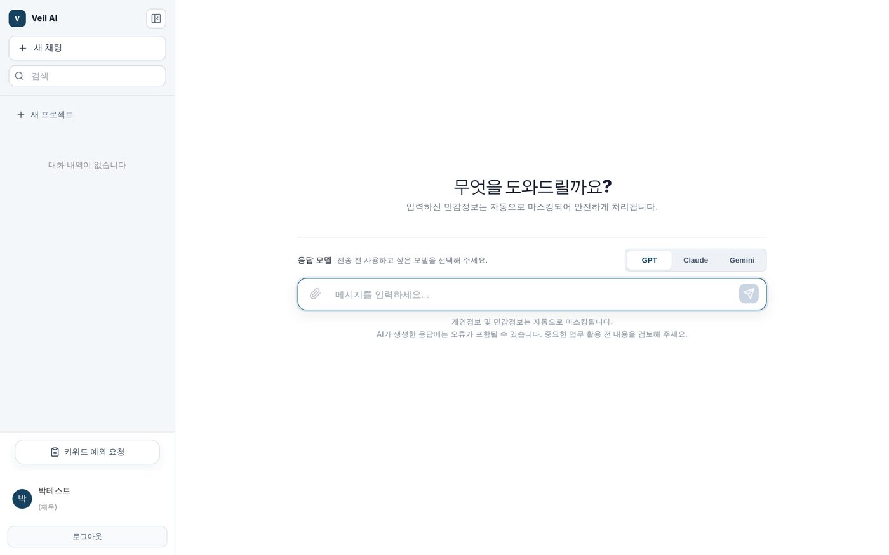
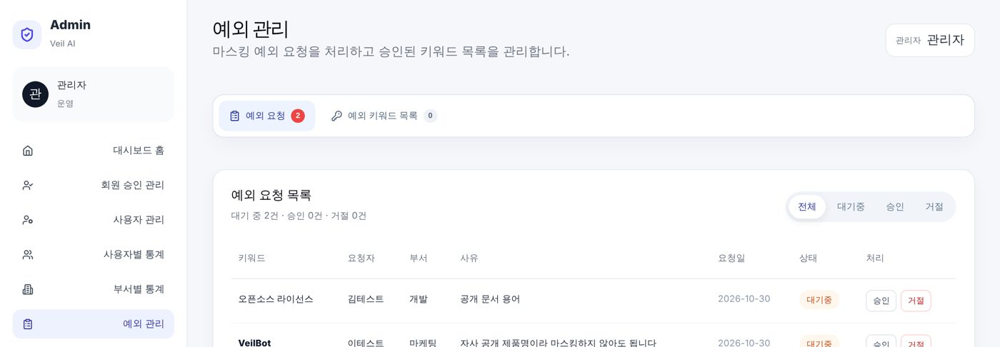
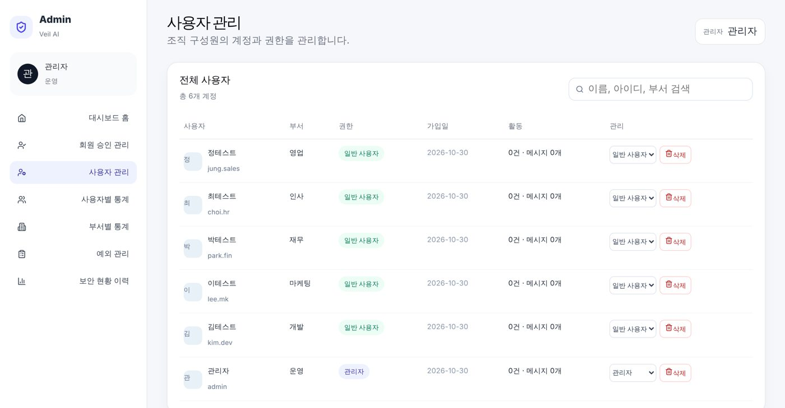
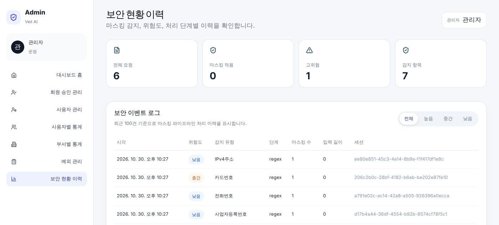

개요


문제
- 생성형 AI를 업무에 쓰면서 직원이 고객 정보·계좌번호·사내 문서명을 프롬프트에 그대로 붙여 넣는 일이 생김
- 입력한 문장은 그대로 외부 LLM 서버로 전송되고, 회사는 무엇이 나갔는지 알 수 없음
- LLM 사용을 막기보다 보내기 직전에 걸러 주는 계층이 필요하다고 판단
주요 기능
정규식 → NER 모델 → 위험도 판정
보내기 전 가려진 문장과 탐지 항목 표시
GPT-4o · Claude · Gemini 중 선택
유형·부서·사용자별 통계, 보안 로그
직원 요청 → 관리자 승인 시 마스킹 제외
DB에는 마스킹된 대화와 탐지 기록만
- 모델
- klue/roberta-base 파인튜닝 · 엔티티 8종 (BIO 레이블 17개)
- 스택
- FastAPI · SQLAlchemy · JWT / React · Vite
- 배포
- Vercel · Hugging Face Spaces(Docker) · Supabase(PostgreSQL)
형식은 규칙으로, 문맥은 모델로

환불 계좌 국민은행 123456-01-234567, 연락처 010-2345-6789로 안내 메일 써줘
환불 계좌 [기관명] [계좌번호], 연락처 [전화번호]로 안내 메일 써줘
계좌번호 high 10 + 전화번호 medium 5 + 기관명 low 1 + 여러 유형 5 = 21점 → high
왜 두 가지 탐지를 섞었나
- 형식이 정해진 정보(전화·계좌·주민번호)는 규칙이 빠르고 정확함 → 1차 정규식
- 형식이 없는 정보(이름·기관명·문서명·프로젝트명)는 문맥을 봐야 함 → 2차 NER 모델
- 정규식이 가린 문장을 모델에 넘겨 같은 정보를 두 번 잡지 않음
위험도를 보여 주는 이유
- 편하려고 쓰는 AI라도, 지금 입력한 정보가 유출되면 얼마나 위험한지 바로 보여 줘 사용자에게 경각심을 주기 위해 위험도를 함께 표시
단계별 역할
고치기 쉽게, 단계마다 독립된 유닛으로
정규식·NER·위험도가 각자 파일 하나. 한 단계를 고쳐도 다른 단계는 그대로
공통 인터페이스 하나에 회사별 파일. 새 LLM은 파일 추가 + 등록 한 줄
채팅과 관리자 대시보드를 폴더째 나눠 서로 영향 없이 수정
backend/app FastAPI
api/요청을 받는 입구 (라우터 3개)
pipeline/마스킹 3단계 + 예외 키워드
llm/외부 LLM 연결
core/설정 · DB · 인증
schemas/요청·응답 형식 (원문 필드 없음)
frontend/src React
pages/로그인 · 회원가입 · 채팅 · 프로젝트
features/chat/채팅 화면 묶음
features/dashboard/관리자 화면 8개 묶음
components/공통 부품 · 랜딩 시연
api/서버 요청을 한 곳에서
단계가 독립돼 있어서 NER 모델을 불러오지 못해도 정규식 결과로 서비스는 계속 돌아갑니다.
내 작업
NER 학습 데이터셋 설계·구축
데이터 구성
| 유형 | 문장 수 | 넣은 이유 |
|---|---|---|
| 단일 엔티티 + NONE | 39,624 | 라벨별 기본 학습, NONE으로 과잉 탐지 확인 |
| 멀티 엔티티 | 4,952 | 한 문장에 민감정보가 여러 개 섞인 입력 |
| 다중 문장 | 5,000 | 두 문장 이상 이어지는 실제 업무 입력 |
| 합계 | 49,576 |
라벨별 출처
| 라벨 | 출처 |
|---|---|
| PERSON · ORG | KLUE-NER 원본 문장 (뉴스·위키) |
| ADDRESS · FINANCIAL | KLUE-NER 원본 + 규칙 기반 합성 절반씩 |
| DOCUMENT · PROJECT · PASSWORD | 대응하는 공개 데이터가 없어 전량 규칙 기반 합성 |
문제
- 공개 NER 데이터에는 인명·기관·주소는 있지만 사내 문서명·프로젝트명·비밀번호처럼 기업에서 새는 정보는 라벨 자체가 없음
해결 방법
- 있는 라벨은 공개 데이터 그대로: 자연스러운 실제 문장 확보
- 없는 라벨은 합성: 규칙 기반으로 업무 문장을 합성해 채움
- 실제 입력 형태 반영: 멀티 엔티티·다중 문장 데이터를 따로 추가
NONE 문장과 Hard negative
- 민감정보가 없는 NONE 문장을 단일 엔티티 데이터와 함께 넣어 과잉 탐지 여부를 확인
- 민감정보와 형태는 비슷하지만 민감정보가 아닌 hard negative를 NONE에 포함
내가 내린 결정
NER 모델 파인튜닝과 비교
테스트셋 성능 비교
| 모델 | 정밀도 | 재현율 | F1 |
|---|---|---|---|
| KLUE-RoBERTa | 95.59 | 96.70 | 96.14 |
| KoELECTRA-base | 95.21 | 96.08 | 95.64 |
| KoELECTRA-NER | 94.58 | 95.70 | 95.14 |
| KcBERT | 87.27 | 91.04 | 89.12 |
단위 %. 평가 기준: 같은 출처 · 생성 규칙으로 만든 학습 미사용 문장 4,996개, 탐지 항목(이름 · 계좌 등) 단위로 맞힌 경우만 정답(seqeval). 같은 데이터 · 같은 분할로 4개 모델을 비교했습니다.
문제
- 기업 민감정보 8종을 BIO 방식 17개 레이블로 탐지할 한국어 모델이 필요
- 어떤 사전학습 모델이 이 데이터에 맞는지 직접 비교해 보고 고르기로 함
해결 방법
- 같은 조건 비교: 직접 만든 데이터셋과 같은 분할로 한국어 사전학습 모델 4종을 각각 파인튜닝
- 에폭 선택: 검증 점수가 가장 높은 8 에폭(반복 횟수) 모델을 테스트에 사용
- 테스트셋 평가: 학습에 쓰지 않은 테스트셋에서 F1로 최종 비교
내가 내린 결정
직접 써 보며 찾은 문제와 수정
| 발견한 문제 | 수정 내용 |
|---|---|
| 전화번호·계좌번호 오탐 | ‘연락처·계좌’ 키워드 문맥과 숫자 경계 조건을 추가하고, 겹친 구간 제거와 날짜·버전 번호 제외로 서로 잘못 잡히는 문제 해결 |
| 직책이 이름으로 마스킹 | ‘팀장’ 같은 직책 단어는 PERSON 결과에서 제외하는 예외 처리 |
| 원문이 남는 구조 | 브라우저(localStorage) 저장을 서버 DB로 옮기고, 마스킹된 문장만 저장하며 탐지 결과에서도 원문 필드 제거 |
| 로그인하면 무조건 대시보드로 이동 | 역할에 따라 직원은 채팅, 관리자는 대시보드로 이동하도록 수정 |
검토 방식
- 실제 업무 문장으로 확인: 계좌·연락처·사내 문서명이 섞인 문장을 넣고 미리보기 결과와 위험도를 확인
- 재현 → 수정 → 재확인: 문제가 나온 문장을 그대로 두고, 수정 후 같은 문장으로 다시 확인
- 회귀 테스트: 정규식 수정이 기존 탐지를 깨지 않도록
test_regex_layer.py32건 유지 (전부 통과)
회귀 테스트 예시 32건 모두 통과
| 입력 | 결과 | |
|---|---|---|
| 연락처 010-1234-5678 | 연락처 [전화번호] | ✓ |
| 국민 123456-01-234567 | 국민 [계좌번호] | ✓ |
| 회의는 2024-01-15 14:30에 | 그대로 (날짜) | ✓ |
| 버전 1.2.3.4 배포 | 그대로 (IP 아님) | ✓ |
랜딩·로그인 화면React · CSS

페이지 구성 (한 페이지 스크롤)
내비게이션 → 히어로 · 마스킹 시연 → 보안 기능 카드 → 운영 흐름 3단계 → 로그인


로그인 처리 흐름
반응형: 1040px · 760px 두 구간 미디어쿼리로 태블릿·모바일 배치 조정
시스템 전체
메시지 한 건이 처리되는 과정
- 1프론트전송 → applyPreviewMask()
ChatPage가 원문을 미리보기 API로 먼저 보냄
- 2백엔드POST /api/mask/preview
run_masking_pipeline() 실행, 원문 없이 마스킹 결과만 반환
- 3프론트말풍선 교체
LLM 응답 전에 사용자 말풍선을 가려진 문장으로 바꿈
- 4백엔드POST /api/mask/chat
예외 키워드 조회 → 파이프라인(스레드풀) → 탐지 로그 저장 → LLM 호출
- 5외부선택한 LLM
GPT-4o · Claude · Gemini가 마스킹된 텍스트만 받아 답변
- 6프론트POST /conversations
답변 표시 후 대화 저장, entities의 original 필드는 제거
흐름에서 확인한 포인트
- 인증: axios 인터셉터가 모든 요청에 JWT를 붙이고, 401이 오면 로그인 화면으로 보냄
- 미리보기와 응답 분리: 무엇이 가려졌는지 LLM 응답을 기다리기 전에 확인 가능
- 서버 보호: CPU를 오래 쓰는 NER 추론은 run_in_threadpool로 돌려 이벤트 루프를 막지 않음
- 원문 보호: 응답 형식에 원문 필드가 없고, DB에는 마스킹된 텍스트만 저장
마스킹 파이프라인 (run_masking_pipeline)
NER 추론과 마스킹ner_layer.py
BIO 태그를 엔티티 구간으로 묶기
모델은 토큰마다 B(시작)·I(이어짐)·O(해당 없음) 태그를 붙이고, 같은 종류의 B→I를 하나로 묶어 가립니다. (예시 문장)
[이름] 팀장에게 [프로젝트명] 보고서 전달해줘 · 직책 ‘팀장’은 남김
엔티티별 위험도 (NER_RISK_MAP)
| high | 비밀번호 · API 키 · 금융정보 |
| medium | 이름 · 주소 |
| low | 문서명 · 기관명 · 프로젝트명 |
마스킹할 때 처리하는 것 (_apply_mask)
- 위치 보정: 태그로 바꾸면 글자 수가 달라지므로 offset을 누적해 다음 엔티티 위치를 맞춤
- 예외 키워드: 관리자가 승인한 키워드와 구간이 겹치면 건너뜀
- 직책 예외: ‘팀장’만 잡히면 무시하고, ‘김민지 팀장’이면 이름 부분만 마스킹
모델을 안전하게 불러오기
정규식 레이어
탐지 순서와 중복 방지 (detect_all)
앞에서 잡힌 구간은 뒤 탐지기가 다시 잡지 않도록 전체가 공유합니다.
키워드는 남기고 번호만 가리기
‘연락처·전화·휴대폰’ 같은 키워드 뒤 번호만 캡처해서 가려, 문장이 자연스럽게 남습니다.
오탐을 줄이는 장치
| 장치 | 코드에서 하는 일 |
|---|---|
| 숫자 경계 | (?<!\d) · (?!\d)로 긴 숫자 중간을 잘라 잡지 않음 |
| 검증 규칙 | 사업자번호 국세청 체크섬, 카드 BIN·길이, 주민번호 생년월일·성별 자리, IBAN 검증 |
| 문맥 키워드 | SWIFT·은행·송금 같은 단어가 있을 때만 은행코드로 판단 |
| 예외 패턴 | 날짜 형식(2024-01-15), ‘버전’ 뒤 숫자(1.2.3.4)는 제외 |
| 치환 순서 | 뒤에서부터 치환해 앞쪽 위치가 밀리지 않게 함 |
회귀 테스트 (tests/test_regex_layer.py)
32개 케이스 모두 통과
| 입력 | 기대 결과 |
|---|---|
| 국민 123456-01-234567 | 국민 [계좌번호] |
| 회의는 2024-01-15 14:30에 | 그대로 (날짜는 제외) |
| 버전 1.2.3.4 배포 | 그대로 (IP 아님) |
위험도 판정과 예외 키워드
위험도 계산 방식
항목별 가중치 high 10 · medium 5 · low 1을 더하고, 여러 유형이 섞이면 5점을 더합니다.
계산 예시
| 탐지 결과 | 점수 | 판정 |
|---|---|---|
| 전화번호 1개 | medium 5 | low |
| 이름 + 문서명 | 5 + 1 + 유형 2종 5 = 11 | medium |
| 계좌번호 + 전화번호 | 10 + 5 + 유형 2종 5 = 20 | high |
정규식 항목별 위험도 (RISK_MAP)
| high | 주민등록번호 · 외국인등록번호 · 카드번호 · 계좌번호 · 여권번호 |
| medium | 전화번호 · 이메일 · 차량번호 · 사업자등록번호 · 법인등록번호 |
| low | IP 주소 · 현금영수증번호 |
예외 키워드 흐름
채팅 화면에서 키워드와 사유 제출
예외 관리 화면에서 승인·활성화
탐지 구간이 키워드와 겹치면 건너뜀

예: 자사 공개 제품명을 예외로 등록하면, 이름이나 기관명으로 탐지돼도 마스킹하지 않습니다.
API와 데이터 구조FastAPI · SQLAlchemy
API 구성
| 라우터 | 주요 엔드포인트 | 권한 |
|---|---|---|
| /api/auth | login · register · departments · me | 공개 / 로그인 |
| /api/mask | preview · chat · conversations(조회·저장·삭제) · exception-requests | 로그인 사용자 |
| /api/admin | stats · dashboard(요약·사용자·부서) · logs · users · exception-requests · exception-keywords | 관리자 role |
| /api/health | DB까지 실제로 조회해 상태 확인 | 공개 |
LLM 교체 구조 (Provider 패턴)
chat(messages)
- openaiGPT-4o
- anthropicClaude
- geminiGemini
채팅 API는 BaseLLM만 알고, 사용자가 고른 이름으로 구현체를 찾아 호출합니다.

DB 테이블
| 테이블 | 저장하는 것 |
|---|---|
users | 아이디 · 비밀번호 해시(bcrypt) · 이름 · 부서 · 역할 |
masking_logs | 탐지 유형 · 단계 · 위험도 · 개수 (원문 없음) |
chat_conversations | 사용자별 대화 목록 · 제목 · 프로젝트 |
chat_messages | 마스킹된 메시지 · 탐지 항목(원문 제외) · 위험도 |
exception_requests | 직원 예외 요청 · 사유 · 처리 상태 |
exception_keywords | 승인된 예외 키워드 · 활성 여부 |
시스템 분석 · 보안 설계
- 토큰 무효화: JWT에 서버 시작 시각을 넣어, 재시작하면 이전 토큰이 자동으로 막힘
- 관리자 API: 화면과 별개로 서버가 토큰의 role을 다시 확인
- DB 노출 차단: Supabase가 테이블을 REST로 노출하므로 시작 시 RLS를 자동으로 켬
- 본인 대화만: 대화 조회·삭제는 user_id로 한 번 더 필터링
채팅과 관리자 화면React · Vite


화면 구성
| 구분 | 페이지 |
|---|---|
| 직원 | 랜딩·로그인(직접 구현) · 회원가입 · 채팅 · 프로젝트별 채팅 |
| 관리자 | 대시보드 홈 · 회원 승인 · 사용자 관리 · 사용자별 통계 · 부서별 통계 · 예외 요청 · 예외 키워드 · 보안 로그 |
코드 구조
시스템 분석 · 권한과 대화 저장
- 화면 접근 제어는 브라우저에 저장된 역할을 보지만, 실제 권한은 백엔드가 다시 확인
- 대화는 브라우저가 아니라 서버 DB에서 불러와 새로고침해도 유지
실제 사용 가능한 서비스로 배포
배포 중 생긴 문제와 해결
| 문제 | 해결 |
|---|---|
| DB 직접 연결 실패 | 직접 연결이 IPv6 전용이라 Session pooler 주소 사용 |
| 첫 요청 지연 | 서버 시작 시 별도 스레드에서 NER 모델을 미리 로드 (warmup) |
서버가 켜질 때
결과
결과
- 규칙과 모델을 섞은 3단계 파이프라인으로 번호류와 문맥형 정보를 0.1초 이내에 실시간 마스킹
- 직접 구축한 데이터셋으로 학습한 모델이 테스트셋 F1 96.14%
마스킹 처리 시간
| 입력 길이 | 평균 |
|---|---|
| 50자 미만 | 53ms |
| 50 ~ 99자 | 66ms |
| 100 ~ 125자 | 78ms |
24건 전체 35 ~ 90ms, 평균 66ms로 모든 요청 0.1초 이내 (Hugging Face Spaces CPU 서버 실측 · GPU 없음 · LLM 응답 시간 제외)